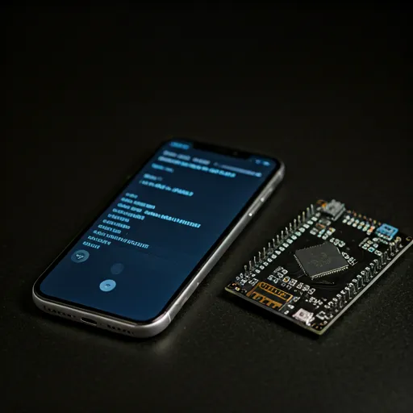
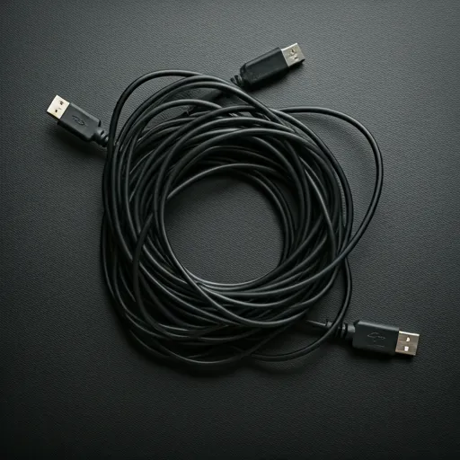
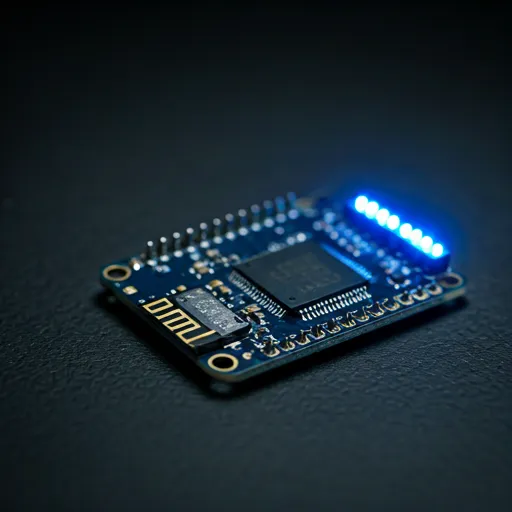

Precision
Terminal
Control.
Wireless Serial Monitor for ESP & Raspberry Pi

DITCH THE
USB CABLE.
No more port failures
Eliminate mechanical wear on USB ports through high-speed wireless serial tunneling over WiFi TCP.
Remote Field Access
Debug devices across the room or across the factory floor. No laptop required — just your phone.
Phone is your terminal
Field testing, quick checks, demos — your iPhone or Android becomes a full serial monitor.


Install Library
Add WirelessSerial to your ESP via Arduino Library Manager. For Raspberry Pi, use pip or a simple TCP script.
Connect App
Serial Air automatically discovers devices on your local network using mDNS / Bonjour. Zero configuration.
FOUND: [ESP32_SERIAL_AIR]
Stream Data
Instant bidirectional serial communication with sub-50ms latency over local WiFi. Send commands, receive logs.
Universal Integration
TWO_LINES_OF_CODE / ANY_PLATFORM
// Serial Air — ESP8266 / ESP32 #include <WirelessSerial.h> WirelessSerial ws; void setup() { Serial.begin(115200); WiFi.begin("ssid", "password"); ws.begin(); // start wireless serial ws.mirror(Serial); // mirror Serial to WiFi } void loop() { ws.handle(); Serial.println("SYSTEM_STATUS: NOMINAL"); delay(1000); }
Auto Discovery
Devices found automatically via Bonjour/mDNS. No IP address configuration needed.
mdns_broadcastSerial Plotter
Visualize numeric data as real-time graphs. Toggle between log view and plot view.
60hz_refreshDevice Security
Optional pairing codes, passwords, and device fingerprints. Connect only trusted devices.
authenticated_accessSearch & Filter
Find specific log entries instantly. Filter by keyword in real time across thousands of lines.
instant_grepCommand Macros
Save frequently used commands and send them with a single tap. Bidirectional communication.
one_tap_executeAuto Reconnect
Seamless recovery from network interruptions. Never miss a log line.
zero_downtimeGENERATE
TEST CODE.
SELECT_BOARD // ENTER_WIFI // GET_SKETCH
Pick your board, enter WiFi credentials, and get a ready-to-upload sketch. Supports ESP8266, ESP32, Arduino UNO R4, Raspberry Pi, and more.
terminal Open Code Generator#include <WirelessSerial.h> WirelessSerial ws; void setup() { Serial.begin(115200); WiFi.begin("YOUR_SSID", "YOUR_PASS"); ws.begin(); ws.mirror(Serial); }
COMPATIBILITY_MATRIX
SUPPORTED_HARDWARE
| Board | WiFi | BLE |
|---|---|---|
| ESP8266 (NodeMCU, Wemos D1 Mini) | check_circle | — |
| ESP32 / C3 / S3 | check_circle | check_circle |
| Arduino Nano ESP32 | check_circle | check_circle |
| M5Stack / Seeed XIAO ESP32 | check_circle | check_circle |
| Arduino UNO R4 WiFi | check_circle | — |
| Raspberry Pi 3/4/5, Pico W | check_circle | — |
| Orange Pi / Banana Pi | check_circle | — |
| Any WiFi TCP device | check_circle | — |
SPEC_COMPARISON
SERIAL_AIR vs ALTERNATIVES
| Feature | Serial Air | BLE Terminals | PC Monitor |
|---|---|---|---|
| WiFi TCP | check_circle | cancel | cancel |
| BLE | check_circle | check_circle | cancel |
| No PC Required | check_circle | check_circle | cancel |
| Auto Discovery | check_circle | cancel | cancel |
| Serial Plotter | check_circle | cancel | check_circle |
| Log Export | check_circle | cancel | check_circle |
System FAQ
No. Serial Air works entirely over your local WiFi network. No internet, no cloud, no accounts. All data stays on your device.
Under 2KB RAM (excluding WiFi stack). The library is designed for ESP8266's 80KB RAM constraint. Flash usage is under 8KB.
Yes. Install WirelessSerial from the Arduino Library Manager. Works with Arduino IDE, PlatformIO, and CLI. Use our Code Generator for instant setup.
Serial data is transmitted as plaintext over your local network. WiFi encryption (WPA2/WPA3) protects it in transit. The app includes optional pairing codes and passwords for device authentication.